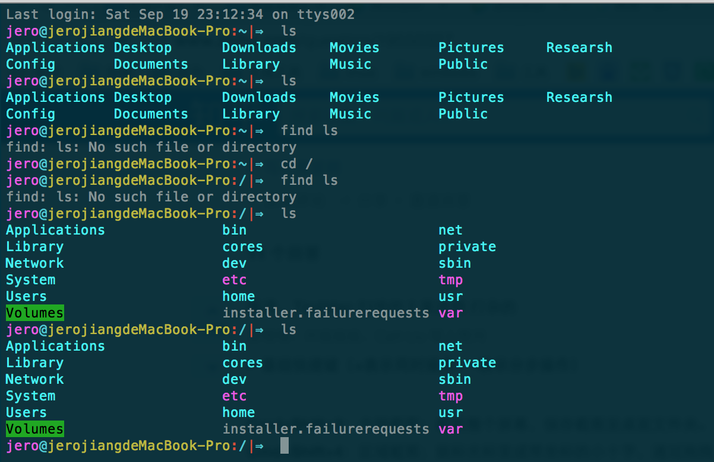
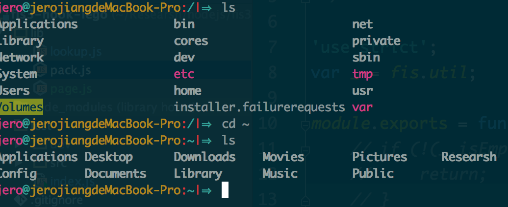
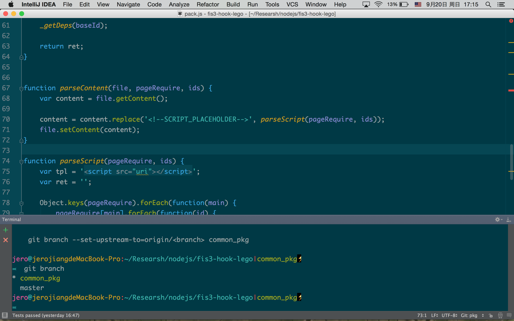
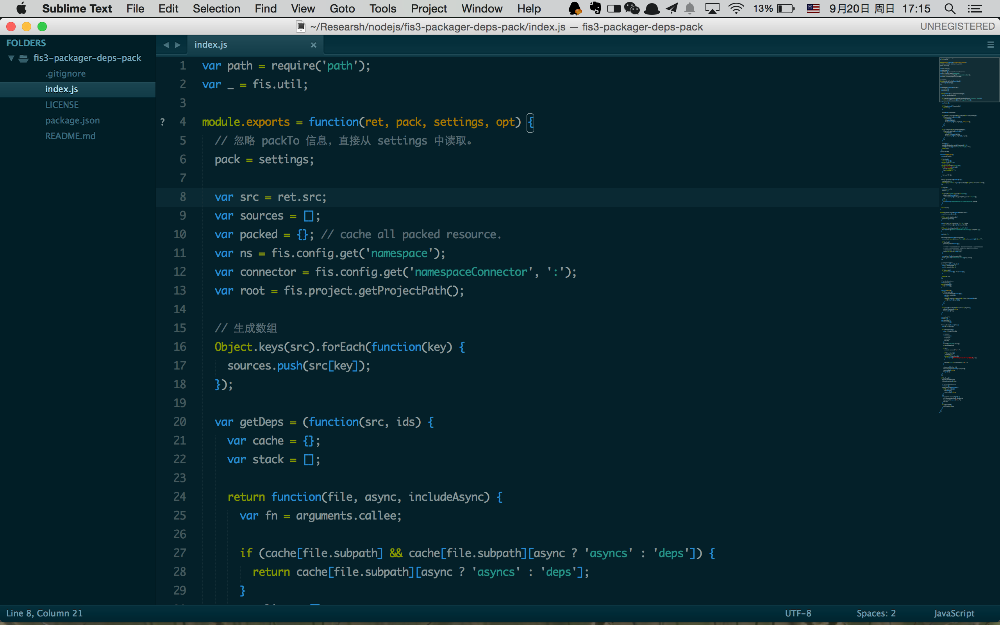
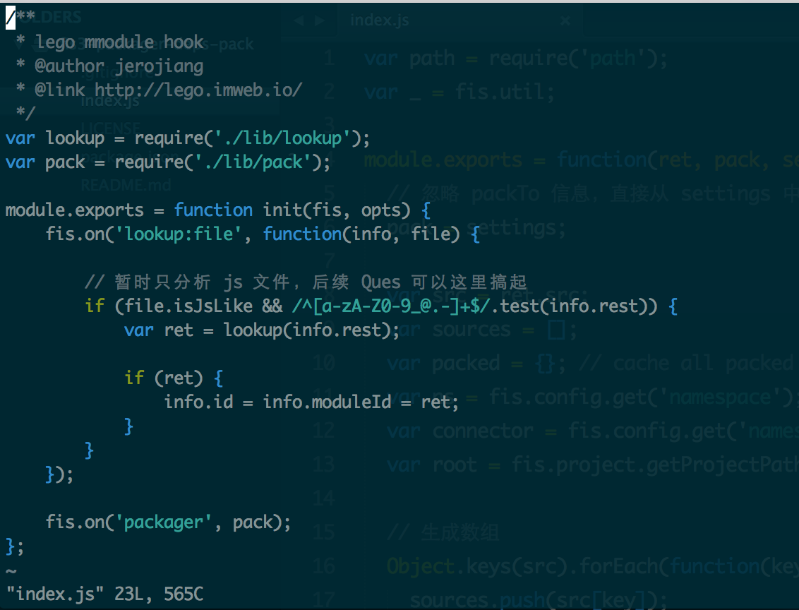

开发工具颜色搭配
mac 相比 windows 有一个大优势，那就是美。
在开发者眼中，这体现在开发工具的主题搭配上，废话不多说，上图。
- Terminal 
iTerm2 和 terminal 一样。 
idea & webstorm 
sublime text3 
vim 
配置过程
其实在折腾之前，强迫症心态就让我觉得，所有的工具，颜色主题理应保持一致！这是一个强迫症的尊严，不容侵犯！索性目前业界已经有很多方案，比如：
至于我选择 Solarized 的原因，主要是选了之后才知道 Tomorrow Theme的存在。
下载
git clone git://github.com/altercation/solarized.git
terminel / iterm2
两者都是命令行工具，iTerm2 强大些。
Terminal 的话，在
solarized/osx-terminal.app-colors-solarized下双击Solarized Dark ansi.terminal和Solarized Light ansi.terminal就会自动导入两种配色方案 Dark 和 Light 到 Terminal.app 里。iTerm2 的话，到
solarized/iterm2-colors-solarized下双击Solarized Dark.itermcolors和Solarized Light.itermcolors两个文件就可以把配置文件导入到 iTerm 里。
两者都要在其“设置”中将你选中的主题设为默认。
vim
我对 vim 没啥好感，因为不会，但是改个配置文件什么的也还挺方便的。
配置主题过程很简单，先去上面下载的目录找主题文件并复制到指定位置，然后在 vim 中配置，如下：
$ cd solarized
$ cd vim-colors-solarized/colors
$ mkdir -p ~/.vim/colors
$ cp solarized.vim ~/.vim/colors/
$ vi ~/.vimrc
syntax enable
set background=dark
colorscheme solarized
idea & webstorm
该系列在编码体验上的强大不用多说，我会在《工具狂人系列》里面的做深入的介绍。
安装主题当然也非常简单，直接在 https://github.com/jkaving/intellij-colors-solarized 下载源码中的 settings.jar ，然后在 File | Import Settings... 中导入……
github 的 README 有详细的载入过程，不多说。
sublime text3
st2 没有试过。
Solarized 官方介绍页面竟然没有放置 sublime text3 的介绍，也是不懂。
https://github.com/braver/Solarized ，这上面有详细的安装方法，直白点就是：
在 Package Control 中搜索 Solarized Color Scheme 然后回车。